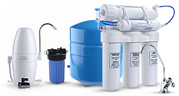
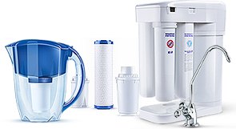
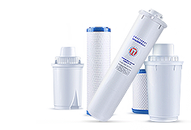
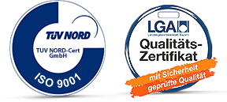

О компании Аквафор плюс
ОсОО "Аквафор плюс" Официальный представитель компании "Аквафор" в Кыргызстане!
Сегодня "Аквафор" является крупнейшим изготовителем материалов для очистки питьевой воды и бытовых водоочистителей на их основе.
Внимание к специфике проблем водоочистки в разных условиях и научный потенциал сотрудников позволили нам занять место технологического лидера рынка бытовой водоочистки.
Мы заботимся о том, чтобы наши покупатели получали продукт высшего качества.
Главной целью компании является безопасность потребителя, и её достижение подтверждается сертификатом соответствия, высоким международным стандартам от ведущих независимых организаций.
ОсОО "Аквафор плюс" планомерно осуществляет расширение дилеров по всей территории Кыргызской Республики.
ОсОО "Аквафор плюс" действует на основании Сертификата Свидетельства, имеет сеть оптовых диллеров и реализаций, как в Бишкеке, так и в городах Ош, Джалал-Абад, Токмок, Талас, Каракол, Баткен.
ОсОО "Аквафор плюс" - является официальным представителем компании "Аквафор" более 10 лет
и имеет фирменный магазин "Аквафор" по адресу: г.Бишкек, ул.Киевская, 77 (здание "Илбирс").
Реализация продукции компании "Аквафор" осуществляется на основании Договора с компанией "Аквафор".
Компания "Аквафор"
 «Кто мы»
АКВАФОР — 1 из лидеров всемирного изготовления фильтров для воды.
Компания была создана в 1992.
На текущий день штат составляет больше 1000 людей.
Мы обеспечиваем нашей продукцией свыше 20 млн. семей в больше чем 20 государствах.
 «Чем мы занимаемся»
АКВАФОР — в одно и тоже время разработчик и изготовитель, фирма, которая осуществляет контроль весь ход формирования от идеи вплоть до окончательного продукта.
Все без исключения наши фильтры изобретены с учетом международных стандартов очищения воды и заточены под разрешение наиболее всевозможных задач с водой, то что дает возможность нам действенно чистить воду в каждой точке планеты.
Наши технологические процессы дают возможность нам осуществлять лучшую продукцию в любой категории чистящих фильтров (кувшины, обратный осмос, стационарные системы).
 «Наши технологии»
АКВАФОР применяет новые технологические процессы в области водоочистки, полный ряд которых считается своей разработкой фирмы.
Мы обладаем наиболее чем 50 патентами по всему миру, в т.ч. в СОЕДИНЕННЫХ ШТАТОВ АМЕРИКИ, Германии, Англии и Российской федерации.
Нашей особенной гордостью считаются технологические процессы Аквален, Полое волокно, Карбонблок и Осмос с водо-водяным баком.
 «Наше качество»
Мы беспокоимся о этом, чтобы наша продукция существовала благоприятной в применении и решала все без исключения задачи наших потребителей.
Цель нашей фирмы — это здравие наших клиентов. Непосредственно по этой причине мы применяем только лишь высококачественные материалы от испытанных и влиятельных поставщиков.
Качество продукта обследуется на каждом этапе формирования. Высочайшие стандарты условий к своей продукции для нас считается великой составляющей процесса к безупречному качеству.
АКВАФОР сертифицирован по стандартам ISO 9001 (TUV Nord, руководитель в области в Западной и Восточной Европе). Приблизительно 10% абсолютно всех изготавливаемых фильтров в каждой партии проходят контроль пред тем равно как покинуть предприятие.
Целый ряд наших товаров также приобрел сертификат LGA. Наши качество доказывает целый ряд самостоятельных фирм и лабораторий. Согласно проведенным испытаниям, фильтры АКВАФОР отвечают международным образцам качества и эффективности.